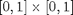
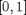
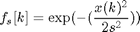
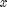
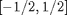

GAUSSKERNEL - Gaussian filter.
Contents
Description
Compute a 1D or 2D Gaussian filter.
Syntax
f = GAUSSKERNEL(n,s,N);
Inputs
n : size of the filter, odd for no phase in the filter (if too small it will alterate the filter); for a 2D filter, should be n=[n1,n2].
s : standard deviation of the filter.
N : size of the big signal/image (supposed to lie in  or ); for a 2D filter, should be N=[N1,N2].
Output
f : Gaussian kernel, normalized so that it sums to 1.
Remark
The equation (in 1D) is:  where  spans the interval .
See also
Ressembles: DIRGAUSSKERNEL, HOURGLASSKERNEL, EUCLIDKERNEL, CONVOLUTION. Requires: MESHGRID.
Function implementation
function f = gausskernel(n, s, N)
parsing parameters
error(nargchk(3, 3, nargin, 'struct')); error(nargoutchk(1, 1, nargout, 'struct'));
calculation
nd = 1; if length(n)>1 && (n(2)>1 || isequal(s,0)) nd = 2; end if nd==2 && length(s)==1 s = [s s]; end if nd==2 && length(N)==1 N = [N N]; end if nd==1 f = gausskernel_1d(n,s,N); else f = gausskernel_2d(n,s,N); end
end % end of gausskernel
Subfunctions
GAUSSKERNEL_2D - Compute a 2D Gaussian filter.
%-------------------------------------------------------------------------- function f = gausskernel_2d(n,s,N) if nargin<3, N = n; end if length(N)==1 || N(1)==1 N = N(:); N = [N N]; end if length(s)==1 || s(1)==1 s = s(:); s = [s s]; end if s<=0 f = zeros(n); f(round(n/2),round(n/2)) = 1; return; end x = ( (0:n(1)-1)-(n(1)-1)/2 )/N(1); y = ( (0:n(2)-1)-(n(2)-1)/2 )/N(2); [Y,X] = meshgrid(y,x); f = exp( -(X.^2/ (2*s(1)^2)) - (Y.^2/ (2*s(2)^2)) ); f = f / sum(f(:)); end
GAUSSKERNEL_1D - Compute a 1D Gaussian filter.
%-------------------------------------------------------------------------- function f = gausskernel_1d(n,s,N) if nargin<3, N = n; end; if s<=0 f = zeros(n,1); f(round(n/2)) = 1; return; end x = ( (0:n-1)-(n-1)/2 )/(N-1); f = exp( -x.^2/(2*s^2) ); f = f / sum(f(:)); end